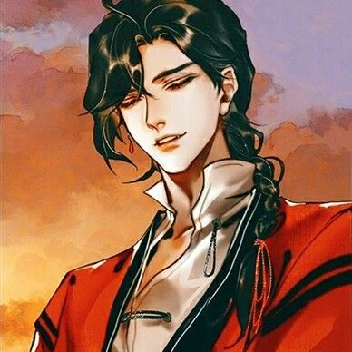
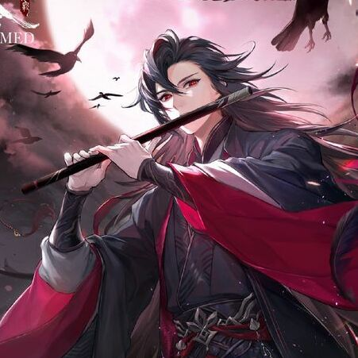
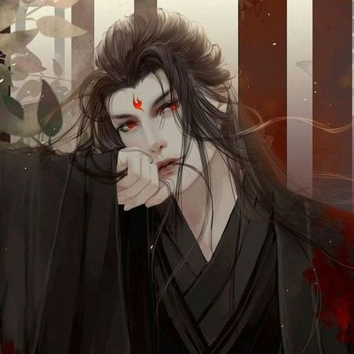
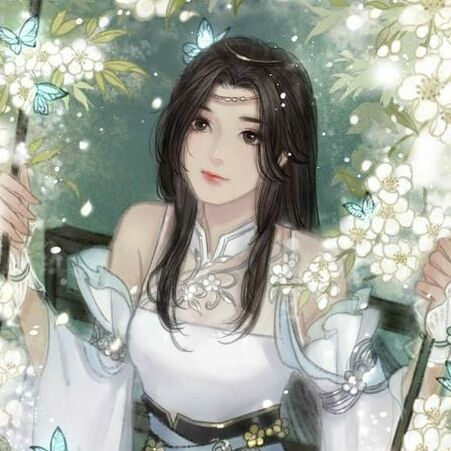
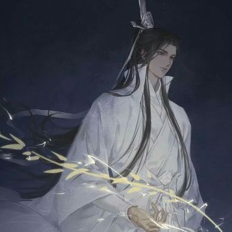

The Best Novels of the Decade

The Founder of Diabolism

Heaven Officials' Blessing
The Scum Villain's Self-Saving System
About Another Masterpiece
Author Mo Xiang Tong Xiu has written three danmei novels with a fourth on the way.
-

April 2009
Heaven's Official Blessing
The story has been described as follows: “Eight hundred years ago, Xie Lian was the Crown Prince of the Xian Le kingdom; one who was beloved by his citizens and the darling of the world. Unsurprisingly, he ascended to the Heavens at a very young age.
Now, eight hundred years later, Xie Lian ascends to the Heavens for the third time as the laughing stock of all three realms. On his first task as a god, he meets a mysterious demon who rules the ghosts and terrifies the Heavens……yet unbeknownst to Xie Lian, this demon king has been paying attention to him for a very, very long time.”
-

March 2011
Xie Lian
I’ve described the story as follows:The story follows Wei Wuxian, a spiritual cultivator who died 13 years prior to the start of the story. He was a controversial figure in his time as he used the ‘dark arts’ to utilize his magic. He becomes known as the founder of the Demonic Path as a result of this practice.
When the series begins, a man named Mo Xuanyu decides to sacrifice his soul to bring Wei Wuxian back to life. In doing so, Wuxian would resurrect in Xuanyu’s body.
The ritual works, and Wei Wuxian returns, slightly confused at his unexpected resurrection, but ready to do whatever task Xuanyu has summoned him to do. Wei Wuxian gets a surprise second chance at life, but he’s haunted by the reputation he left behind prior to his death. He quickly finds himself interacting with people he knew before he died, some of whom suspect his true identity and some who don’t. He embarks on adventures fighting monsters and solving mysteries across the countryside, dealing with the fallout from his previous life along the way.
-

December 2012
Grandmaster of Demonic Cultivation
“Can’t I read harem novels anymore?!” Shen Yuan is reborn into a scum villain in a harem novel, destined to die by the hands of the protagonist, Shen Qingqiu.
But, if you must know, the original Shen Qingqiu was sliced alive by his disciple, Luo Binghe, into a human stick! A human stick! Shen Qingqiu’s heart is a full herd of grass mud horses running full tilt, yet: “It’s not like I don’t want to hug the protagonist’s thighs, but who let this man be so blackened. The revenge that needs to be taken is some thousands of deeds!”
Why are all the romance that should be given to the women in the plot imposed on him? Why, as a scum villain, should he still have to take the bullet for the protagonist and sacrifice himself? Shen Qingqiu: “……I think I can still save him one more time.”
-

July 2016
Mo Dao Zu Shi
In nineteenth-century China, in a remote Hunan county, a girl named Lily, at the tender age of seven, is paired with a laotong, “old same,” in an emotional match that will last a lifetime.
The laotong, Snow Flower, introduces herself by sending Lily a silk fan on which she’s painted a poem in nu shu, a unique language that Chinese women created in order to communicate in secret, away from the influence of men.
-

July 2019
ERHA
Mo Ran thought becoming Chu Wanning's disciple was a mistake. His shizun was really too much like a cat, while he himself was a dumb pup who'd only slobber and wag his tail. Dog and cats were different by nature; originally, the dumb pup didn't want to extend his furry paws to that cat.
He originally thought, dogs should be with dogs, like his shixiong, beautiful and tame like a cute Japanese Spitz, and the two of them together would surely be a match made in heaven. Yet, after having died and reborn, after having lived two lives, the o ne he hauled back each time to his den in the end was always the one he couldn't stand at first: the snow-white kitty shizun.
-
Foreign Magic
In
every book
History of Hanfu
The story of clothing and costumes is one of the most fascinating developments in human history.
Every different dynastic has different scopes of territory, social values, social norms, etc. Therefore, many aesthetic standards were made according to the environments (socially, geographically, economically, politically) of certain dynastic. This is the main reason why traditional Chinese clothing has such many styles.
6 fun facts about Mo Dao Zu Shi
This is posted on Moxiang Tongxiu
Fairy is actually a Husky
When I set up this character, I didn’t know that huskies were… not that intelligent, so now in my mind Fairy still has the look of a Husky. Let’s just think that Fairy is an extremely intelligent mutated Husky okay…
 Lan Qiren has a beard
Lan Qiren has a beard
However, it was shaved clean by Zangse Sanren. He was so mad! Later, the son of Zangse Sanren also shaved his beard… (but I did not write about it).
Make Xingchen laugh
Both Xueyang and Ah Qing knew about this but they would never tell Xingchen. Song Lan did not know about this, because the dude never ever laughed
Lan Sizhui is older than Jin Ling
But both of them are 172-cm tall. Sizhui suffered from malnutrition when he was a child, and only ate bland food when he was growing up, therefore his development is a bit slow…
Jiang Cheng went to blind dates
Here are Jiang Cheng’s requirements in his partner: naturally beautiful, graceful and obedient, hard-working and thrifty, coming from a respected family, cultivation level not too high, personality not too strong
In order to confess to Jiang Yanli
Jin Zixuan specifically hired someone to write a long long long cheesy essay, and he learnt it by heart. Turned out he did not use a single sentence.
Frequently Asked Questions
The Chinese aesthetic tradition